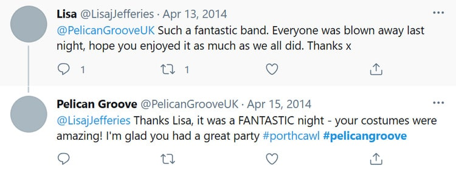

Social media is a great place to find quote testimonial examples, and you might even find customer images that you can repurpose in your own marketing. This type of testimonial is quick and easy, as the positive reviews have already been written and shared, so all you need is permission to share it again. The benefit of the statements already being on social media also helps prove credibility, as anyone can double-check whether the review is genuine.
